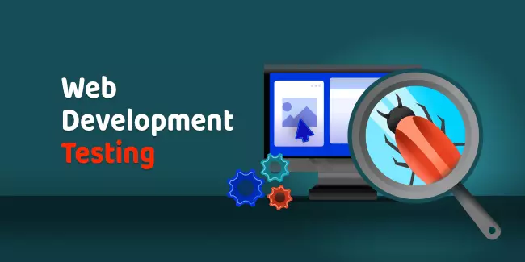

6. Testing
Testing identifies bugs, vulnerabilities, and performance issues. Different tests such as unit, integration, system, and security testing are conducted. Detected issues are documented and fixed, then retested. This cycle continues until the software meets all requirements.